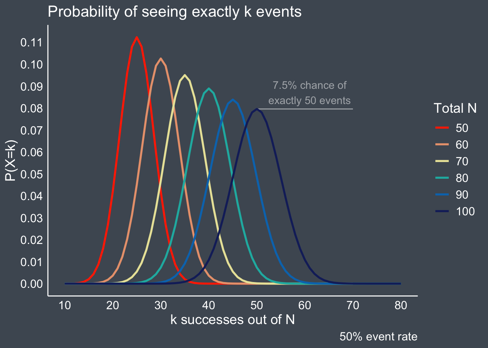
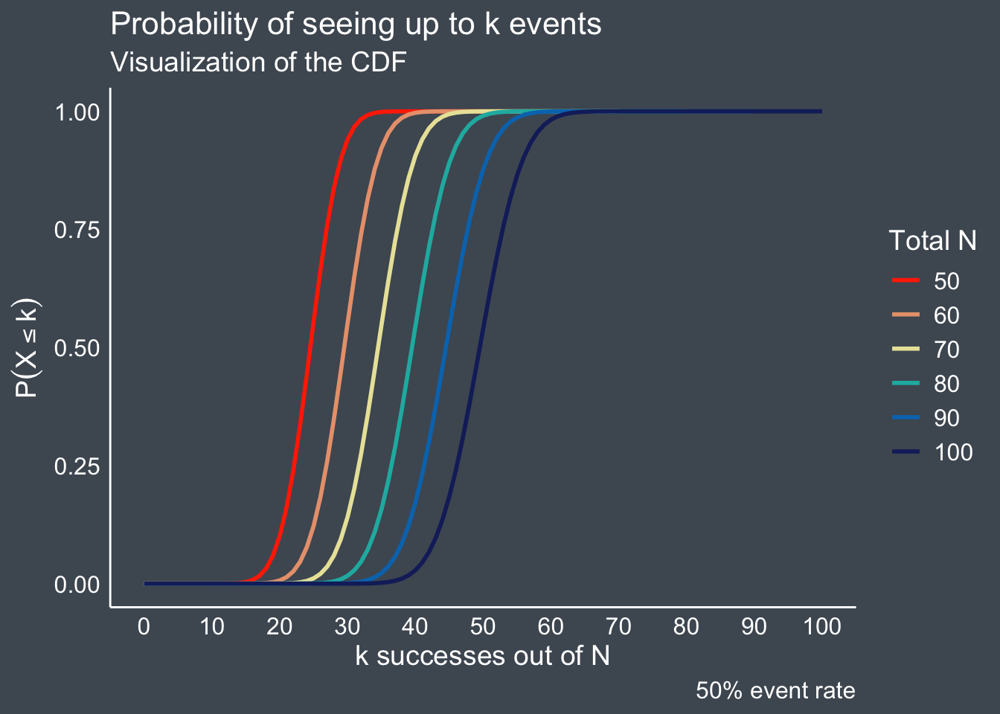
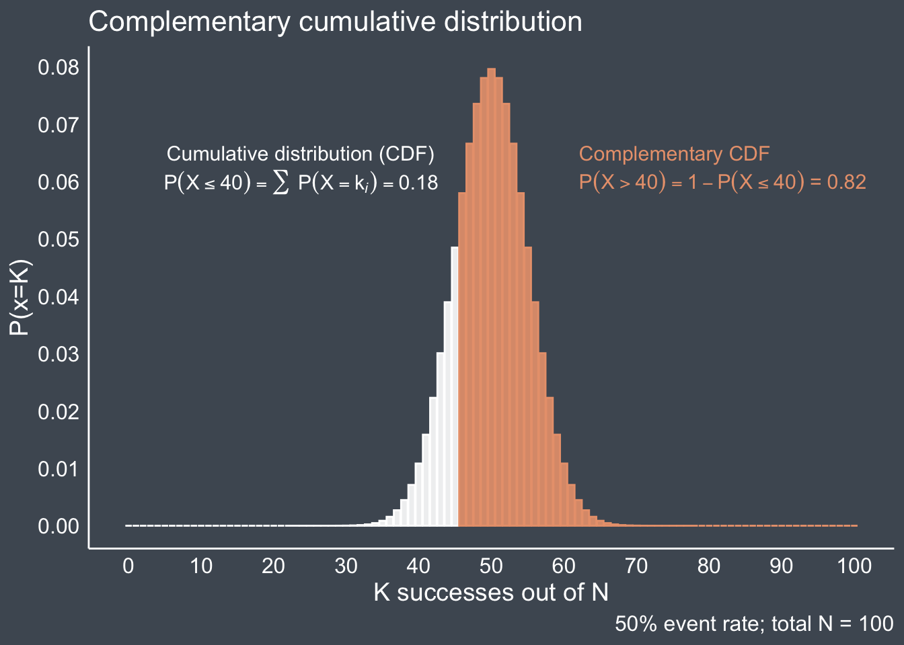
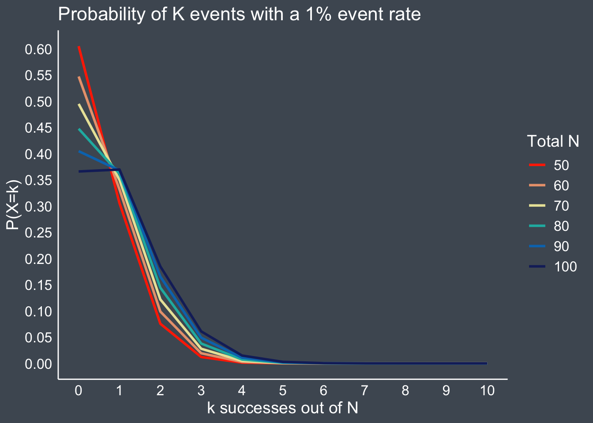
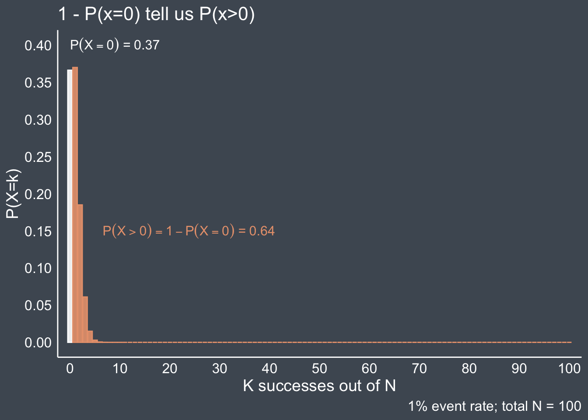
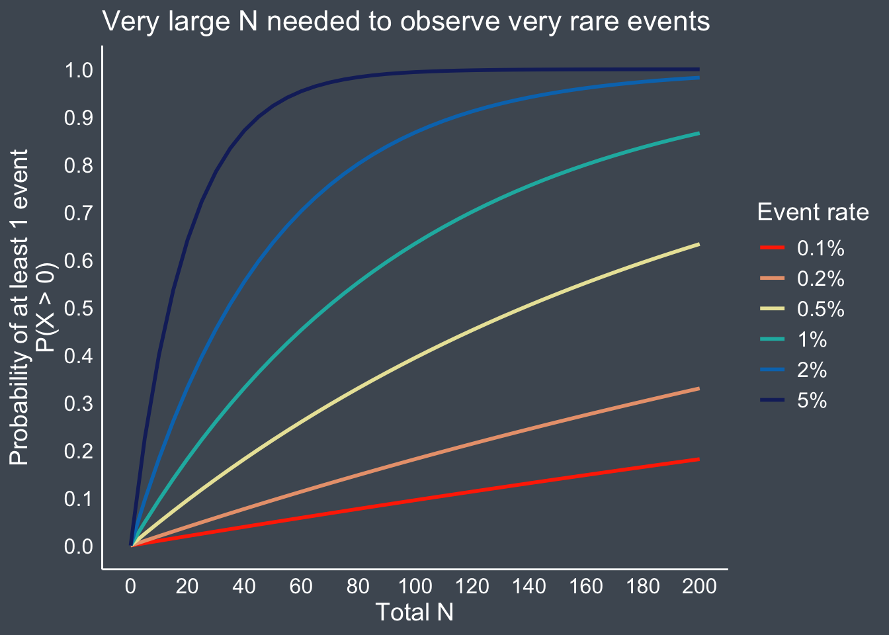

A series of posts on understanding Martin Bland’s ‘Detecting a single event’
rare events
stats 101
series
Author
Jess Graves
Published
August 5, 2025
Modified
August 5, 2025
Libraries and themes
library(tidyverse) library(paletteer)library(colorspace)pal <-"LaCroixColoR::PeachPear"background_col <-"#4E5762FF"my_theme <-theme_classic() +theme(axis.text =element_text(size =12, color ="white"),axis.title =element_text(size =14, color ="white"),axis.ticks =element_blank(),legend.text =element_text(size =12, color ="white"), legend.title =element_text(size =14, color ="white"), plot.caption =element_text(size =12, color ="white"), plot.title =element_text(size =16, color ="white"), plot.subtitle =element_text(size =14, color ="white"), axis.line =element_line(color ="white"),panel.background =element_rect(color = background_col, fill = background_col), plot.background =element_rect(color = background_col, fill = background_col),legend.background =element_rect(color = background_col, fill = background_col) )theme_set(my_theme)
Rare events are … hard to find
The problem is this. If we have a series of cases where no event has taken place, what is the estimated event rate? … Just because we have not seen an event yet does not mean we will never see one.
This is the first post of what will be a series of posts reviewing Martin Bland’s “Detecting a single event” and some of the theory behind it.
As an applied statistician who spends most of my days fitting linear models and running simulations, I fall out of practice with some of the fundamentals of statistical theory. And it has been refreshing to return to the basics and be reminded of just how good they are!
In reading Bland’s write up, I found I needed to re-learn a lot of things, which inspired me to start a small series covering:
The problem to be solved & an overview of the binomial distribution
Estimating likely event rates when zero events have been detected (exact 95% confidence intervals)
Estimating the power to detect at least 1 event in a given study1
Zero events \(\ne\) zero risk
Why should we care about rare events? Well…rare \(\ne\) unimportant.
Studying rare events come up often in research. Some examples:
Detecting adverse events / side effects in drug development
Monitoring safety signals in post-market drug surveillance
Catching early signs of an outbreak in infectious disease surveillance
Adverse events in drug development
Let’s stick with drug development as our motivating example.
I want to know if my drug is associated with a rare event that I know occurs ~1% of the time in the general population. How many patients should I enroll to test if our drug is related to an increased risk of this event?
With an overall event rate that low there is a strong chance that I will simply see no events at all during the study (that’s just how probability rolls 🎲 🥁).
Would it make sense to enroll only 5 participants?
Probably not! This is pretty intuitive. If the event happens 1% of the time, then in a N = 5 person study I’d expect:
I can’t observe 0.05 of an event. And most likely, I’ll just see zero events.
What about 100?
Better, but not great. With 100 participants, I would expect to see a whopping average event number of:
\[
\text{Events} = 100 \times 0.01 = 1
\]
An average of 1 doesn’t mean we will see 1. Some studies might — but many others won’t. In fact, there’s a fairly high chance (36.6% to be exact) that I’d still see zero events in a study of 100 people, even if the true incidence is 1%.
So, I might ask myself:
How many patients (N) do I need to have a high probability of seeing at least one event?
That is, how do I adequately power my study to ensure that it isn’t a flop.
If I accidentally observe zero events in my study, what range of true event rates could I have plausibly missed – just by chance?
If I enrolled 100 participants and saw zero events… is it still reasonable to believe that the true event rate might be 1%?
A walk down binomial lane
How likely will I see [#] event(s)?
Events are discrete – they either happen or they don’t.
Let’s say I flip a fair coin (i.e., 50/50 chance of heads or tails) 100 times. How many times will it turn heads? On average: 50 times. But as we know, real life rarely matches the average.
Suppose I repeat the same experiment, 100 coin flips, twice:
In the first set, I might get 46 heads.
In the second, I might get 55.
What’s the probability of getting exactly 50 heads if I flip a fair coin 100 times? We can estimate this by running this same experiment 10000 times (i.e., a simulation) and see what proportion resulted in 50 heads.
That is, the probability of seeing \(k\) events out of \(n\) trials (or experiments), where the probability of an event is \(p\). The probability of \(k\) events is dependent on the \(n\) trials and the \(p\) event rate.
Visualizing these likelihoods
Probability of exact number of events
We can plot the probability of seeing exactly\(k\) events for various sample sizes (Figure 1). The height of the curve tells us how likely it is to see that event.
To return to our fair coin example: just like we estimated manually in Section 3.1, the probability of seeing exactly 50 events when you flip a fair coin 100 times is roughly 7.5%!
Figure 1 also makes it clear how the probability of \(k\) events depends heavily on the sample size. The chances of seeing exactly 25 events when we flip a coin 50 times is ~11%, but if we flip that same coin 100 times, the chances are nearly 0.
Code
ns <-seq(50, 100, by=10)ks <-c(0:max(ns))p <-0.5examples <-crossing(k=ks, n=ns, p) %>%filter(k <= n) %>%rowwise() %>%mutate(prob_k =dbinom(k, n, p), cum_k =pbinom(k, n, p)) examples %>%ggplot(aes(x=k, y=prob_k, color =factor(n))) +annotate("segment", x =50, xend =70,y =dbinom(50, 100, 0.5), yend =dbinom(50, 100, 0.5), color ="white", alpha =0.5) +geom_line(linewidth=1) +labs(x='k successes out of N', y ='P(X=k)', color ='Total N', title ="Probability of seeing exactly k events",caption ="50% event rate" ) +scale_color_paletteer_d(palette = pal) +scale_x_continuous(breaks=scales::pretty_breaks(10), limits =c(10, 80)) +scale_y_continuous(breaks=scales::pretty_breaks(10)) +annotate("text", x =61, y =dbinom(50, 100, 0.5)+0.0075, color ="white", alpha =0.5, hjust =0.5,label ="7.5% chance of\nexactly 50 events")

Figure 1. Visualization of probability density function of the binomial distribution across various Ns given p = 0.5 (50% event rate).
Probability of up to k events: the cumulative distribution function
To understand how to find the probability of seeing at least a certain number of events, we first need to estimate the probability of finding up to a certain number of events2.
To do that, we use the cumulative distribution function, which is calculated as the cumulative sum3 of the probabilities (from Equation 1) each preceding event up to the total events you wish to see:
Figure 2 shows us these cumulative probabilities across the same Ns as Figure 1.
Previously, we saw that the likelihood that I see exactly 50 events out of 100 flips is ~ 7.5% (Figure 1) . But, what is the likelihood that I’ll see up to 50 events? 50%.
Code
examples %>%ggplot(aes(x=k, y=cum_k, color =factor(n))) +geom_line(linewidth=1) +labs(x='k successes out of N', y =expression(P(X <= k)), color ="Total N", title ="Probability of seeing up to k events", subtitle ="Visualization of the CDF",caption ="50% event rate") +scale_color_paletteer_d(palette = pal) +scale_x_continuous(breaks=scales::pretty_breaks(10))

Figure 2. Visualization of cumulative distribution function of the binomial distribution across various Ns given p = 0.5 (50% event rate).
Estimating at least k events
But in my study on rare adverse events, I need to see at least a certain number of events. So, we need a mathematical framework to answer the question:
What is the probability of seeing at least k events?
Laws of probability tell us that all total probabilities sum to 1. Therefore, if we want to know how likely we are to see at least k events, we can simply say subtract the probability of \(\le\) k (Equation 2) events from 14:
\[P(X>k) = 1-P(X\le k) \tag{3}\]
For the sake of easier visualization, we’ll look at our fair coin again. Figure 3 shows the total probability space divided at 40 heads for a fair coin flipped 100 times and how we can calculate that there is an 82% chance I’ll see > 40 heads.
Code
n_select <-100k_select <-45example_n_20 <- examples %>%mutate(n =factor(n)) %>%filter(n == n_select) %>%mutate(lt = k <= k_select, sum =cumsum(prob_k))example_n_20 %>%ggplot(aes(x=k, y=prob_k, color = lt, fill = lt)) +geom_bar(stat='identity', position ='identity', alpha=0.9) +labs(x='K successes out of N', y ='P(x=K)', caption ="50% event rate; total N = 100", title ="Complementary cumulative distribution") +scale_x_continuous(breaks=scales::pretty_breaks(10)) +scale_y_continuous(breaks=scales::pretty_breaks(10)) +theme(legend.position ='none') +scale_fill_manual(values=c('#E9A17CFF', "white")) +scale_color_manual(values=c('#E9A17CFF', "white")) +annotate("text", label =expression(P(X <=40) ==sum() ~P(X == k[italic(i)]) ==0.18), color ='white',x=20, y=0.06,size=4, hjust=0.4)+annotate("text", label ="Cumulative distribution (CDF)", color ='white', x=20, y=0.065, size=4, hjust=0.4) +annotate("text", label =expression(P(X >40) ==1-P(X <=40) ~"="~0.82), color ='#E9A17CFF', x=70, y=0.06, size=4, hjust=0.2)+annotate("text", label ="Complementary CDF", color ='#E9A17CFF', x=70, y=0.065, size=4, hjust=0.3)

Figure 3. Illustration of the complementary cumulative distribution function.
What about very rare events?
Alright, now we have the fundamentals of the binomial distribution. The rules are all the same, but now let’s look at how the distributions look under rare event conditions.
Let’s return to my 1% adverse event example. Figure 4 shows us the probability distributions for 1% incidence rates across various Ns.
Compared to Figure 1, these probability distributions look much less symmetric. And even among studies with large samples (e.g., N = 100), the likelihood of observing 0 events is still quite large at > 30%.
Code
# ns <- seq(10, 100, by=10)ks <-c(0:max(ns))p <-0.01examples <-crossing(k=ks, n=ns, p) %>%filter(k <= n) %>%rowwise() %>%mutate(prob_k =dbinom(k, n, p), cum_k =pbinom(k, n, p)) examples %>%ggplot(aes(x=k, y=prob_k, color =factor(n))) +geom_line(linewidth=1) +labs(x='k successes out of N', y ='P(X=k)', color ='Total N', title ="Probability of K events with a 1% event rate") +scale_color_paletteer_d(palette = pal) +scale_x_continuous(breaks=scales::pretty_breaks(10), limits =c(0, 10)) +scale_y_continuous(breaks=scales::pretty_breaks(10))

Figure 4. Visualization of probability density function of the binomial distribution across various Ns given rare events – p = 0.01 (1%).
Code
n_select <-max(ns)k_select <-0example_n_10 <- examples %>%mutate(n =factor(n)) %>%filter(n == n_select) %>%mutate(lt = k <= k_select)example_n_10 %>%ggplot(aes(x=k, y=prob_k, color = lt, fill = lt)) +geom_bar(stat='identity', position ='identity', alpha=0.9) +labs(x='K successes out of N', y ='P(X=k)', title ="1 - P(x=0) tell us P(x>0)", caption ="1% event rate; total N = 100") +scale_x_continuous(breaks=scales::pretty_breaks(10), expand =c(0.02, 0)) +scale_y_continuous(breaks=scales::pretty_breaks(10)) +theme(legend.position ='none') +scale_fill_manual(values=c('#E9A17CFF', "white")) +scale_color_manual(values=c('#E9A17CFF', "white")) +annotate("text", label =expression(P(X ==0) ~"="~0.37), color ='white',x=0, y=0.40,size=4, hjust =0) +annotate("text", label =expression(P(X >0) ==1-P(X ==0) ~"="~0.64), color ='#E9A17CFF', x=10, y=0.15, size=4, hjust=0.1)

Code
# examples |># group_by(n, p) |># arrange(n, k) |># mutate(prob_gt_0 = 1-first(prob_k)) |># dplyr::select(n, prob_gt_0) |># unique() |># ggplot(aes(x=n, y=prob_gt_0)) +# geom_line(color = "white",# linewidth = 1) +# labs(x = "Total N",# y = "P(K > 0)",# title = "N > 30 needed to have ~80% chance of seeing at least 1 event\nin a study with a 5% event rate") +# scale_x_continuous(breaks = scales::pretty_breaks(10)) +# scale_y_continuous(breaks = scales::pretty_breaks(5))
You need very large N to see very rare events
We can generalize this across event rates and sample sizes to see that for very rare events, we need very large N.
For our 1% event rate study, we’d need to enroll at least 200 participants to get an 80% chance of seeing > 0 events! 5
Code
ns <-seq(0, 200, by =5)ps <-c(0.001, 0.002, 0.005, 0.01, 0.02, 0.05)ps <- ps[ps>0]examples_ps <-crossing(k=ks, n=ns, p=ps) %>%filter(k <= n) %>%rowwise() %>%mutate(prob_k =dbinom(k, n, p), cum_k =pbinom(k, n, p)) examples_ps_gt0 <- examples_ps |>group_by(n, p) |>arrange(p, n, k) |>mutate(prob_gt_0 =1-first(prob_k), incidence =paste0(100*p, "%")) |> dplyr::select(n, incidence, prob_gt_0) |>unique()p <- examples_ps_gt0 |>ggplot(aes(x=n, y=prob_gt_0, color =factor(incidence), group = incidence)) +geom_line(linewidth =1) +labs(x ="Total N", y ="Probability of at least 1 event\nP(X > 0)", color ='Event rate', title ="Very large N needed to observe very rare events") +scale_x_continuous(breaks = scales::pretty_breaks(10)) +scale_y_continuous(breaks = scales::pretty_breaks(10)) +scale_color_paletteer_d(palette = pal) pggsave("preview-image.png", p, units='cm', width =20, height =12)

Figure 5. Probabilities of observing > 0 events for given event rates and sample sizes.
Wrapping up Part 1
As we know, capturing rare events is hard, but not impossible. The Binomial distribution gives us a framework for thinking clearly about this uncertainty.
It helps us move from “I didn’t see it” to “Why didn’t I see it” and “How likely was I to see it?”.
For part 2, I’ll look at how to interpret a study when zero events are observed: what kind of event rates are still plausible, and how to calculate exact confidence intervals around… nothing at all.
Thanks for reading — more soon.
Footnotes
No promises on how many posts this will translate to.↩︎
This might seem weird, but it is actually easier that way. See Equation 3 .↩︎
The third axiom of probability tells us that for mutually exclusive events (like observing exactly 4 events vs exactly 5 events — only one can happen in a given study), the total probability of any combination is just the sum of the individual probabilities.
In notation that’s, if all events \(A_i\) are mutually exclusive: \(P\left( \bigcup_{i=1}^k A_i \right) = \sum_{i=1}^k P(A_i)\)↩︎
Note: This is an estimate of the power of the study – however, I want to spend a little more time on power, so will reserve more comments on this in another post.↩︎
Citation
BibTeX citation:
@online{graves2025,
author = {Graves, Jess},
title = {Part 1: {Rare} Events Are Hard to Find},
date = {2025-08-05},
url = {https://JessLGraves.github.io/posts/2025-08-02-rare-events-pt1/},
langid = {en}
}
---title: "Part 1: Rare events are hard to find"description: "A series of posts on understanding Martin Bland's 'Detecting a single event'"author: - name: Jess Gravesdate: 08-05-2025date-modified: last-modifiedexecute-dir: projectcrossref: fig-title: '**Figure**' tbl-title: '**Table**' fig-labels: arabic tbl-labels: arabic title-delim: "."link-citations: trueexecute: echo: true warning: false message: falsecategories: [rare events, stats 101, series] image: preview-image.pngdraft: false # bibliography: references.bibnocite: | @*# csl: statistics-in-biosciences.cslbibliographystyle: apacitation: trueformat: html: math: method: mathjax tags: alleditor: visual---```{r}#| code-summary: Libraries and themeslibrary(tidyverse) library(paletteer)library(colorspace)pal <-"LaCroixColoR::PeachPear"background_col <-"#4E5762FF"my_theme <-theme_classic() +theme(axis.text =element_text(size =12, color ="white"),axis.title =element_text(size =14, color ="white"),axis.ticks =element_blank(),legend.text =element_text(size =12, color ="white"), legend.title =element_text(size =14, color ="white"), plot.caption =element_text(size =12, color ="white"), plot.title =element_text(size =16, color ="white"), plot.subtitle =element_text(size =14, color ="white"), axis.line =element_line(color ="white"),panel.background =element_rect(color = background_col, fill = background_col), plot.background =element_rect(color = background_col, fill = background_col),legend.background =element_rect(color = background_col, fill = background_col) )theme_set(my_theme)```# Rare events are ... hard to find> The problem is this. If we have a series of cases where no event has taken place, what is the estimated event rate? ... Just because we have not seen an event yet does not mean we will never see one.>> \-*Marin Bland* from *“[Detecting a single event](https://www-users.york.ac.uk/~mb55/bsi_study/single_event.pdf)"*::: {.callout-note appearance="minimal"}This is the first post of what will be a series of posts reviewing Martin Bland's "[Detecting a single event](https://www-users.york.ac.uk/~mb55/bsi_study/single_event.pdf)" and some of the theory behind it.As an applied statistician who spends most of my days fitting linear models and running simulations, I fall out of practice with some of the fundamentals of statistical theory. And it has been refreshing to return to the basics and be reminded of just how good they are!In reading Bland's write up, I found I needed to re-learn a lot of things, which inspired me to start a small series covering:1. The problem to be solved & an overview of the binomial distribution2. Estimating likely event rates when zero events have been detected (exact 95% confidence intervals)3. Estimating the power to detect at least 1 event in a given study[^1]:::[^1]: No promises on how many posts this will translate to.# Zero events $\ne$ zero riskWhy should we care about rare events? Well...rare $\ne$ unimportant.Studying rare events come up often in research. Some examples:- Detecting adverse events / side effects in drug development- Monitoring safety signals in post-market drug surveillance- Catching early signs of an outbreak in infectious disease surveillance## Adverse events in drug developmentLet's stick with drug development as our motivating example.I want to know if my drug is associated with a rare event that I know occurs \~1% of the time in the general population. How many patients should I enroll to test if our drug is related to an increased risk of this event?With an overall event rate *that low* there is a strong chance that I will simply see no events at all during the study (that's just how probability rolls 🎲 🥁).**Would it make sense to enroll only 5 participants?**Probably not! This is pretty intuitive. If the event happens 1% of the time, then in a N = 5 person study I'd expect:$$\begin{align}\text{Events} &= \text{N} \times \text{Event rate} \\&= 5 \times 0.01 = 0.05\end{align}$$I can't observe 0.05 of an event. And most likely, I'll just see zero events.**What about 100?**Better, but not great. With 100 participants, I would expect to see a whopping average event number of:$$\text{Events} = 100 \times 0.01 = 1$$An average of 1 doesn't mean we *will* see 1. Some studies might — but many others won’t. In fact, there’s a fairly high chance (36.6% to be exact) that I'd still see zero events in a study of 100 people, even if the true incidence is 1%.::: {.callout-important appearance="simple"}So, I might ask myself:1. How many patients (N) do I need to have a high probability of seeing *at least one* event? - That is, how do I adequately power my study to ensure that it isn't a flop.2. If I accidentally observe zero events in my study, what range of *true* event rates could I have plausibly missed – just by chance? - If I enrolled 100 participants and saw zero events... is it still reasonable to believe that the true event rate might be 1%?:::# A walk down binomial lane## How likely will I see \[#\] event(s)? {#sec-how-likely-will-i-see-events}Events are discrete – they either happen or they don't.Let's say I flip a *fair coin* (i.e., 50/50 chance of heads or tails) 100 times. How many times will it turn heads? On average: 50 times. But as we know, real life *rarely* matches the average.Suppose I repeat the same experiment, 100 coin flips, twice:1. In the first set, I might get 46 heads.2. In the second, I might get 55.**What's the probability of getting *exactly* 50 heads** if I flip a fair coin 100 times? We can estimate this by running this same experiment 10000 times (i.e., a simulation) and see what proportion resulted in 50 heads.```{r}#| code-fold: falseset.seed(123)mean(replicate(10000, sum(rbinom(n =100, size =1, prob =0.5)) ==50))```Roughly 7.5% of the time.## The Binomial distributionInstead of relying on simulations, we can use the handy dandy [Binomial distribution](https://en.wikipedia.org/wiki/Binomial_distribution) to help us quantify these probabilities by using the [probability density function](#0):$$f(k; n, p) = P(X = k) = \binom{n}{k} p^k (1 - p)^{n - k} $$ {#eq-pdf}That is, the probability of seeing $k$ events out of $n$ trials (or experiments), where the probability of an event is $p$. The probability of $k$ events is dependent on the $n$ trials and the $p$ event rate.## Visualizing these likelihoods### Probability of exact number of eventsWe can plot the probability of seeing *exactly* $k$ events for various sample sizes (@fig-pdfs). The height of the curve tells us how likely it is to see that event.To return to our fair coin example: just like we estimated manually in @sec-how-likely-will-i-see-events, the probability of seeing exactly 50 events when you flip a fair coin 100 times is roughly 7.5%!@fig-pdfs also makes it clear how the probability of $k$ events depends heavily on the sample size. The chances of seeing exactly 25 events when we flip a coin 50 times is \~11%, but if we flip that same coin 100 times, the chances are nearly 0.```{r}#| fig-cap: Visualization of probability density function of the binomial distribution across various Ns given p = 0.5 (50% event rate). #| label: fig-pdfsns <-seq(50, 100, by=10)ks <-c(0:max(ns))p <-0.5examples <-crossing(k=ks, n=ns, p) %>%filter(k <= n) %>%rowwise() %>%mutate(prob_k =dbinom(k, n, p), cum_k =pbinom(k, n, p)) examples %>%ggplot(aes(x=k, y=prob_k, color =factor(n))) +annotate("segment", x =50, xend =70,y =dbinom(50, 100, 0.5), yend =dbinom(50, 100, 0.5), color ="white", alpha =0.5) +geom_line(linewidth=1) +labs(x='k successes out of N', y ='P(X=k)', color ='Total N', title ="Probability of seeing exactly k events",caption ="50% event rate" ) +scale_color_paletteer_d(palette = pal) +scale_x_continuous(breaks=scales::pretty_breaks(10), limits =c(10, 80)) +scale_y_continuous(breaks=scales::pretty_breaks(10)) +annotate("text", x =61, y =dbinom(50, 100, 0.5)+0.0075, color ="white", alpha =0.5, hjust =0.5,label ="7.5% chance of\nexactly 50 events") ```### Probability of *up to* k events: the cumulative distribution functionTo understand how to find the probability of seeing at least a certain number of events, we first need to estimate the probability of finding *up to* a certain number of events[^2].[^2]: This might seem weird, but it is actually easier that way. See @eq-complement .To do that, we use the [cumulative distribution function](https://en.wikipedia.org/wiki/Cumulative_distribution_function), which is calculated as the cumulative sum[^3] of the probabilities (from @eq-pdf) each preceding event up to the total events you wish to see:[^3]: The [third axiom of probability](https://en.wikipedia.org/wiki/Probability_axioms#Third_axiom) tells us that for mutually exclusive events (like observing exactly 4 events vs exactly 5 events — only one can happen in a given study), the total probability of any combination is just the sum of the individual probabilities. In notation that's, if all events $A_i$ are mutually exclusive: $P\left( \bigcup_{i=1}^k A_i \right) = \sum_{i=1}^k P(A_i)$$$F(k; n, p) = P(X \leq k) = \sum_{k=0}^{x} \binom{n}{k} p^k (1 - p)^{n - k} $$ {#eq-cdf}@fig-cdf shows us these cumulative probabilities across the same Ns as @fig-pdfs.Previously, we saw that the likelihood that I see exactly 50 events out of 100 flips is \~ 7.5% (@fig-pdfs) . But, what is the likelihood that I'll see *up to* 50 events? 50%.```{r}#| label: fig-cdf#| fig-cap: Visualization of cumulative distribution function of the binomial distribution across various Ns given p = 0.5 (50% event rate). examples %>%ggplot(aes(x=k, y=cum_k, color =factor(n))) +geom_line(linewidth=1) +labs(x='k successes out of N', y =expression(P(X <= k)), color ="Total N", title ="Probability of seeing up to k events", subtitle ="Visualization of the CDF",caption ="50% event rate") +scale_color_paletteer_d(palette = pal) +scale_x_continuous(breaks=scales::pretty_breaks(10))```### Estimating *at least* k eventsBut in my study on rare adverse events, I *need* to see at least a certain number of events. So, we need a mathematical framework to answer the question:> What is the probability of seeing *at least* k events?[Laws of probability](https://en.wikipedia.org/wiki/Probability_axioms#Kolmogorov_axioms) tell us that all total probabilities sum to 1. Therefore, if we want to know how likely we are to see *at least* k events, we can simply say subtract the probability of $\le$ k (@eq-cdf) events from 1[^4]:[^4]: See the [complementary cumulative distribution function](https://en.wikipedia.org/wiki/Cumulative_distribution_function#Complementary_cumulative_distribution_function_(tail_distribution))$$P(X>k) = 1-P(X\le k)$$ {#eq-complement}For the sake of easier visualization, we'll look at our fair coin again. @fig-comp-cdf shows the total probability space divided at 40 heads for a fair coin flipped 100 times and how we can calculate that there is an 82% chance I'll see \> 40 heads.```{r}#| fig-cap: Illustration of the complementary cumulative distribution function.#| label: fig-comp-cdfn_select <-100k_select <-45example_n_20 <- examples %>%mutate(n =factor(n)) %>%filter(n == n_select) %>%mutate(lt = k <= k_select, sum =cumsum(prob_k))example_n_20 %>%ggplot(aes(x=k, y=prob_k, color = lt, fill = lt)) +geom_bar(stat='identity', position ='identity', alpha=0.9) +labs(x='K successes out of N', y ='P(x=K)', caption ="50% event rate; total N = 100", title ="Complementary cumulative distribution") +scale_x_continuous(breaks=scales::pretty_breaks(10)) +scale_y_continuous(breaks=scales::pretty_breaks(10)) +theme(legend.position ='none') +scale_fill_manual(values=c('#E9A17CFF', "white")) +scale_color_manual(values=c('#E9A17CFF', "white")) +annotate("text", label =expression(P(X <=40) ==sum() ~P(X == k[italic(i)]) ==0.18), color ='white',x=20, y=0.06,size=4, hjust=0.4)+annotate("text", label ="Cumulative distribution (CDF)", color ='white', x=20, y=0.065, size=4, hjust=0.4) +annotate("text", label =expression(P(X >40) ==1-P(X <=40) ~"="~0.82), color ='#E9A17CFF', x=70, y=0.06, size=4, hjust=0.2)+annotate("text", label ="Complementary CDF", color ='#E9A17CFF', x=70, y=0.065, size=4, hjust=0.3)```# What about very rare events?Alright, now we have the fundamentals of the binomial distribution. The rules are all the same, but now let's look at how the distributions look under rare event conditions.Let's return to my 1% adverse event example. @fig-pdfs-rare shows us the probability distributions for 1% incidence rates across various Ns.Compared to @fig-pdfs, these probability distributions look much less symmetric. And even among studies with large samples (e.g., N = 100), the likelihood of observing 0 events is still quite large at \> 30%.```{r}#| fig-cap: Visualization of probability density function of the binomial distribution across various Ns given rare events -- p = 0.01 (1%). #| label: fig-pdfs-rare# ns <- seq(10, 100, by=10)ks <-c(0:max(ns))p <-0.01examples <-crossing(k=ks, n=ns, p) %>%filter(k <= n) %>%rowwise() %>%mutate(prob_k =dbinom(k, n, p), cum_k =pbinom(k, n, p)) examples %>%ggplot(aes(x=k, y=prob_k, color =factor(n))) +geom_line(linewidth=1) +labs(x='k successes out of N', y ='P(X=k)', color ='Total N', title ="Probability of K events with a 1% event rate") +scale_color_paletteer_d(palette = pal) +scale_x_continuous(breaks=scales::pretty_breaks(10), limits =c(0, 10)) +scale_y_continuous(breaks=scales::pretty_breaks(10)) ``````{r}n_select <-max(ns)k_select <-0example_n_10 <- examples %>%mutate(n =factor(n)) %>%filter(n == n_select) %>%mutate(lt = k <= k_select)example_n_10 %>%ggplot(aes(x=k, y=prob_k, color = lt, fill = lt)) +geom_bar(stat='identity', position ='identity', alpha=0.9) +labs(x='K successes out of N', y ='P(X=k)', title ="1 - P(x=0) tell us P(x>0)", caption ="1% event rate; total N = 100") +scale_x_continuous(breaks=scales::pretty_breaks(10), expand =c(0.02, 0)) +scale_y_continuous(breaks=scales::pretty_breaks(10)) +theme(legend.position ='none') +scale_fill_manual(values=c('#E9A17CFF', "white")) +scale_color_manual(values=c('#E9A17CFF', "white")) +annotate("text", label =expression(P(X ==0) ~"="~0.37), color ='white',x=0, y=0.40,size=4, hjust =0) +annotate("text", label =expression(P(X >0) ==1-P(X ==0) ~"="~0.64), color ='#E9A17CFF', x=10, y=0.15, size=4, hjust=0.1)``````{r}# examples |># group_by(n, p) |># arrange(n, k) |># mutate(prob_gt_0 = 1-first(prob_k)) |># dplyr::select(n, prob_gt_0) |># unique() |># ggplot(aes(x=n, y=prob_gt_0)) +# geom_line(color = "white",# linewidth = 1) +# labs(x = "Total N",# y = "P(K > 0)",# title = "N > 30 needed to have ~80% chance of seeing at least 1 event\nin a study with a 5% event rate") +# scale_x_continuous(breaks = scales::pretty_breaks(10)) +# scale_y_continuous(breaks = scales::pretty_breaks(5))```# You need very large N to see very rare eventsWe can generalize this across event rates and sample sizes to see that for very rare events, we need very large N.For our 1% event rate study, we'd need to enroll at least 200 participants to get an 80% chance of seeing \> 0 events! [^5][^5]: Note: This is an estimate of the power of the study – however, I want to spend a little more time on power, so will reserve more comments on this in another post.```{r}#| label: fig-p-k-gt-0#| fig-cap: Probabilities of observing > 0 events for given event rates and sample sizes. ns <-seq(0, 200, by =5)ps <-c(0.001, 0.002, 0.005, 0.01, 0.02, 0.05)ps <- ps[ps>0]examples_ps <-crossing(k=ks, n=ns, p=ps) %>%filter(k <= n) %>%rowwise() %>%mutate(prob_k =dbinom(k, n, p), cum_k =pbinom(k, n, p)) examples_ps_gt0 <- examples_ps |>group_by(n, p) |>arrange(p, n, k) |>mutate(prob_gt_0 =1-first(prob_k), incidence =paste0(100*p, "%")) |> dplyr::select(n, incidence, prob_gt_0) |>unique()p <- examples_ps_gt0 |>ggplot(aes(x=n, y=prob_gt_0, color =factor(incidence), group = incidence)) +geom_line(linewidth =1) +labs(x ="Total N", y ="Probability of at least 1 event\nP(X > 0)", color ='Event rate', title ="Very large N needed to observe very rare events") +scale_x_continuous(breaks = scales::pretty_breaks(10)) +scale_y_continuous(breaks = scales::pretty_breaks(10)) +scale_color_paletteer_d(palette = pal) pggsave("preview-image.png", p, units='cm', width =20, height =12)```# Wrapping up Part 1As we know, capturing rare events is hard, but not impossible. The Binomial distribution gives us a framework for thinking clearly about this uncertainty.It helps us move from *“I didn’t see it”* to *"Why didn't I see it*" and *“How likely was I to see it?”*.For part 2, I’ll look at how to interpret a study when **zero events** are observed: what kind of event rates are still plausible, and how to calculate exact confidence intervals around… nothing at all.Thanks for reading — more soon.